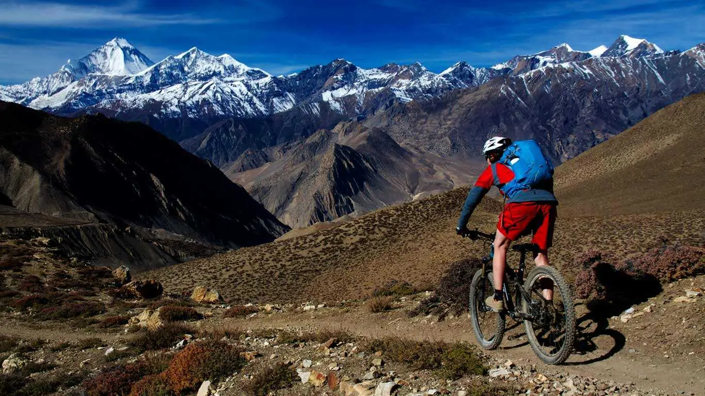

Biking
Biking was not just a ride but an adventure, making me feel free and full of energy. It was a perfect way to explore nature while having fun.
Biking was an exciting and refreshing experience. I rode through beautiful paths, feeling the wind against my face as I pedaled forward. The journey had ups and downs—climbing steep hills took effort, but speeding down slopes felt amazing. I passed through forests, open fields, and quiet roads, enjoying the fresh air and stunning views. Every turn brought something new, whether it was a challenge or a peaceful moment. Biking was not just a ride but an adventure, making me feel free and full of energy.
Mountain Biking

Biking was not just a ride but an adventure, making me feel free and full of energy. It was a perfect way to explore nature while having fun.
Biking is an exhilarating way to explore landscapes while feeling the rush of the wind against my skin. I pedal through winding trails, conquering uphill climbs and enjoying the thrill of fast descents. Each ride strengthens my endurance and deepens my connection with nature. Whether cruising through city streets or navigating rugged mountain paths, I embrace the freedom and adventure that biking offers.
Given your love for outdoor adventures, do you have a favorite biking route in Nepal?
Everest Biking
 Nepal offers incredible biking experiences, from scenic valley rides to challenging mountain trails. Whether I’m navigating the rugged paths of the Annapurna Circuit, exploring the cultural richness of Kathmandu Valley, or tackling the high-altitude routes of Upper Mustang, every ride is an adventure. The diverse terrain, breathtaking landscapes, and rich local culture make biking in Nepal a thrilling and immersive experience.
For guided biking tours, companies like Himalayan Single Track and Epic Rides Nepal provide expert-led trips across stunning locations
Biking was not just a ride but an adventure, making me feel free and full of energy.
Nepal offers incredible biking experiences, from scenic valley rides to challenging mountain trails. Whether I’m navigating the rugged paths of the Annapurna Circuit, exploring the cultural richness of Kathmandu Valley, or tackling the high-altitude routes of Upper Mustang, every ride is an adventure. The diverse terrain, breathtaking landscapes, and rich local culture make biking in Nepal a thrilling and immersive experience.
For guided biking tours, companies like Himalayan Single Track and Epic Rides Nepal provide expert-led trips across stunning locations
Biking was not just a ride but an adventure, making me feel free and full of energy.
Annnapuruna Biking